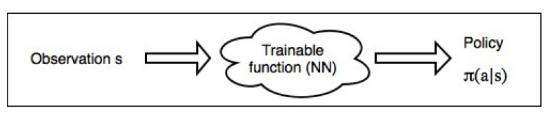
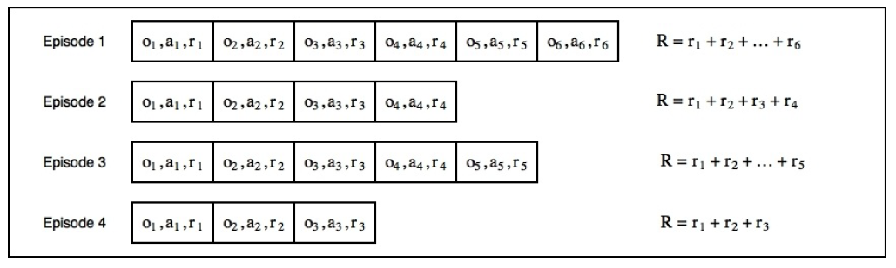
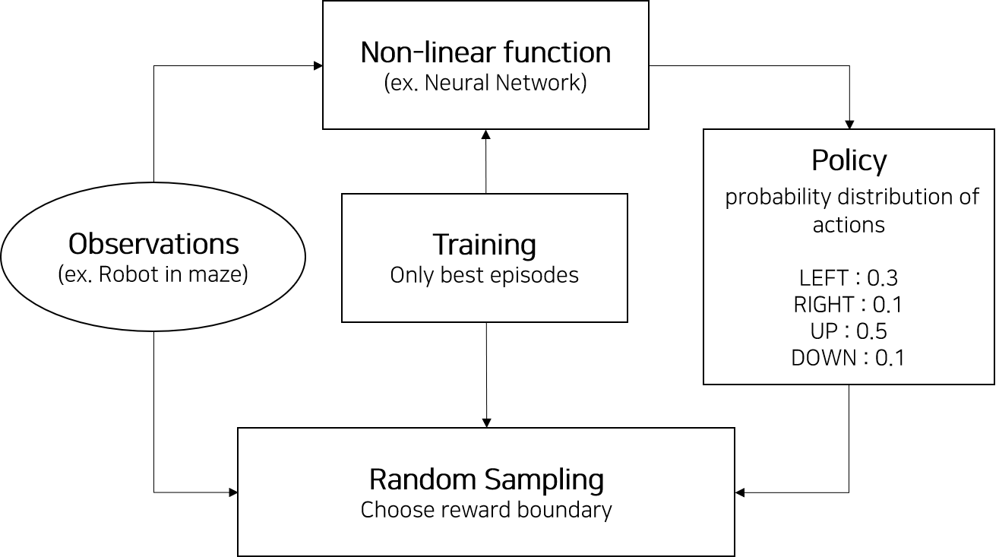

Written by LeeKH
One of the RL(Reinforcement Learning) method - Cross Entropy¶
1. Introduction¶
- 많이 알려진 Deep Q-Network나 Advantage Actor-Critic처럼 주로 사용되는 방법론은 아니지만 Cross Entropy 나름의 장점이 있으므로 소개할만한 가치가 있다
- Cross entropy 방법은 크게 2가지 장점을 갖고 있다
- Simplicity : 방법 자체가 쉽고 간단해서 직접 코드로 작성해도 라인 수가 많지 않음
- Good Convergence : 강화학습의 환경(environment)가 간단하거나 episode가 짧고 보상(reward)이 빈번한 문제의 경우 꽤 잘 먹히는 장점이 있다. 물론 그런 문제들이 많진 않으나 알아서 손해볼 것은 없음
2. Taxonomy of RL methods¶
- 강화학습(RL)의 method들은 크게 model-based, model-free의 두가지로 나뉘어진다
- cross-entropy는 model-free, policy-based에 속한다
- 모든 강화학습(RL)의 방법들은 아래와 같이 구분된다
- Model-free 또는 Model-based
- Value-based 또는 Policy-based
- On-policy 또는 Off-policy
Model-Free¶
model-free method들은 환경이 주는 영향에 대해서 크게 신경 쓰지 않고 학습한다. 이는 곧 환경(environment)이나 보상(reward)에 대한 별다른 모델을 설정하지 않고, 즉 신경 쓰지 않고, 학습하는 것으로 볼 수 있다
보통 환경이 영향을 준다고 보는 것을 예로 들면 빙판길을 걷는 로봇이 앞으로 이동하는 행동(action)을 취했는데 바람이 불어 이상한 곳(next-state but not expected)으로 가는 상황정도로 볼 수 있다
해당 방법은 환경에 대한 모델을 설정하기 어려운 복잡한 환경에 직면했을때 사용하는 방법이다
Model-Based¶
반대로 model-based는 환경 및 보상에 대한 별도의 모델을 사용해서 다음 행동을 고려할 때 함께 판단하는 방법을 의미한다
해당 방법은 비교적 환경에 대한 모델을 설정하기 쉬운(ex. 보드게임) 환경에 적용하기 좋다
Policy-Based¶
Agent가 다음 행동을 결정하는 것은 정책(Policy)를 기반으로 한다. policy-based 방법이란 agent의 정책을 직접적으로 근사시키는 방법을 의미한다. 이런 경우 정책은 다음에 수행해야 할 행동들에 대한 확률 값을 제공한다. Agent는 각 확률값을 기반으로 다음 행동을 결정하는 것이다
Value-Based¶
policy-based 방법은 각 행동들의 확률 값들로 다음 행동을 결정하는 반면, value-based 방법은 각 행동에 대한 가치를 계산해서 가장 높은 가치를 갖는 행동을 선택하는 방법이다.
On-Policy¶
학습에 사용되는 정책(policy)과 실제로 행동하는 정책을 나누지 않는 방법들을 의미(ex. SARSA). 두 정책은 모두 같아야 한다
Off-Policy¶
학습에 사용되는 정책과 실제로 행동하는 정책을 나누어 학습을 진행 할 수 있는 방법들을 의미(ex. Q-learning). 과거 데이터로 학습된 정책을 행동을 수행하는 정책에 사용할 수 있다
Cross-entropy¶
cross-entropy 방법을 위 속성으로 분류하자면 아래와 같다
- model-free 방법이다. 환경에 대한 별도의 모델을 설정하지 않는다
- policy-based 방법이다. Agent의 정책을 바로 근사시킨다
- on-policy 방법이다. 환경으로 부터 얻은 현재 데이터를 통해 행동하고 학습한다
3. Practical cross-entropy¶
- cross-entropy 방법은 policy-based이다. 이는 정책을 바로 근사시키는 것을 의미하며 어떤 비선형 함수(ex.인공 신경망)이 정책(policy)를 만들어낸다. 이러한 방법은 기본적으로 모든 관측 상황, 상태(observation, s)에서 agent가 해야할 행동을 알려준다

- Practical cross-entropy에서 정책(policy)는 행동(agent)에 대한 확률 분포를 나타낸다
- 즉, 위 그림처럼 인공 신경망에 관측 데이터를 통과 시켜 곧장 다음 행동에 대한 확률 분포를 얻는데 이를 policy로 보는 격
- 이제 얻어진 확률 분포에서 random sampling을 시행하여 각 episode에 대한 행동, 보상의 시퀀스 데이터를 얻는다
- 각 보상에 대해서 discount factor를 1로 설정한다고 가정하자. 이는 각 episode의 reward를 단순히 전부 더함으로서 전체 return을 얻을 수 있다

- 위 그림과 같이 4개의 episode를 진행하였고 discount factor는 1이기 때문에 episode의 길이가 긴 경우 total reward가 큰 것으로 해석할 수 있다
- 이는 곧 좋지 않았던 episode를 선별하는 기준이 되며, agent는 좋았던 episode의 데이터만 가지고 학습을 하면 된다. 이것이 cross-entropy 방식의 핵심이다

- 위 그림은 cross-entropy 방법을 간략히 소개한 다이어그램이다
- 해당 방법을 5가지 단계로 나누면 아래와 같다
- 현재 모델 및 환경을 바탕으로 N번의 episode를 진행한다
- 각 episode의 total reward를 계산하고 좋은 episode를 결정하기 위한 total reward의 경계선을 결정한다
- 경계값 보다 작은 total reward를 가진 episode는 버린다
- 남은 episode를 사용해 학습을 진행한다. 남은 episode의 각 지점의 observation이 입력으로, action을 정답으로 신경망을 학습한다
- 1번 과정을 계속해서 반복한다
4. Summary¶
- cross-entropy 방법은 환경 및 보상에 대한 모델을 설정하지 않는 model-free method 다
- cross-entropy 방법은 정책 기반 학습을 수행한다
- 정책(policy)을 행동에 대한 확률 분포 값으로 본다. 정책 계산을 위해 비선형 함수를 사용하는데 Deep RL에서는 인공신경망을 사용한다
- Agent는 정책을 기반으로 random sampling해서 현재 관측 값에서 행동을 결정하고 environment와 상호작용하여 episode를 기록한다
- discount factor 값을 결정하고 각 episode마다 total reward를 계산해서 좋은 episode들을 바탕으로 학습을 진행한다. 이를 반복한다
- Monte-Carlo method에 속한다. Sampling을 통해 optimization하기 때문
- 정책의 distribution과 Target distribution 사이의 KL-divergence 수치에서 cross-entropy를 최소화 하는 방향으로 학습을 진행해가기 때문에 cross-entropy method로 불린다
References¶
- Deep Reinforcement Learning Hands-On, Maxim Lapan, 2018